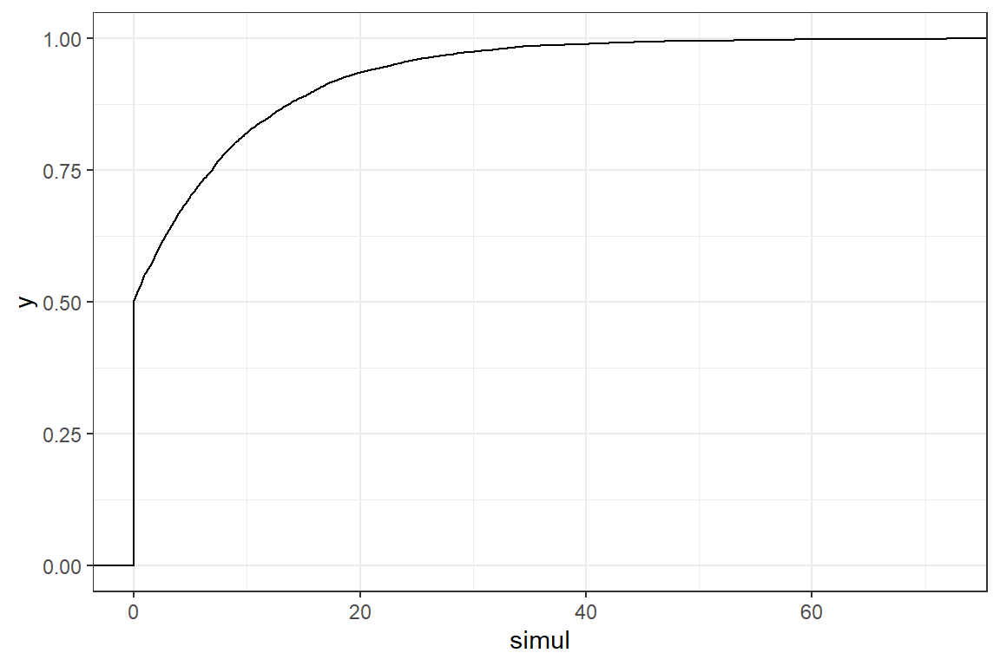
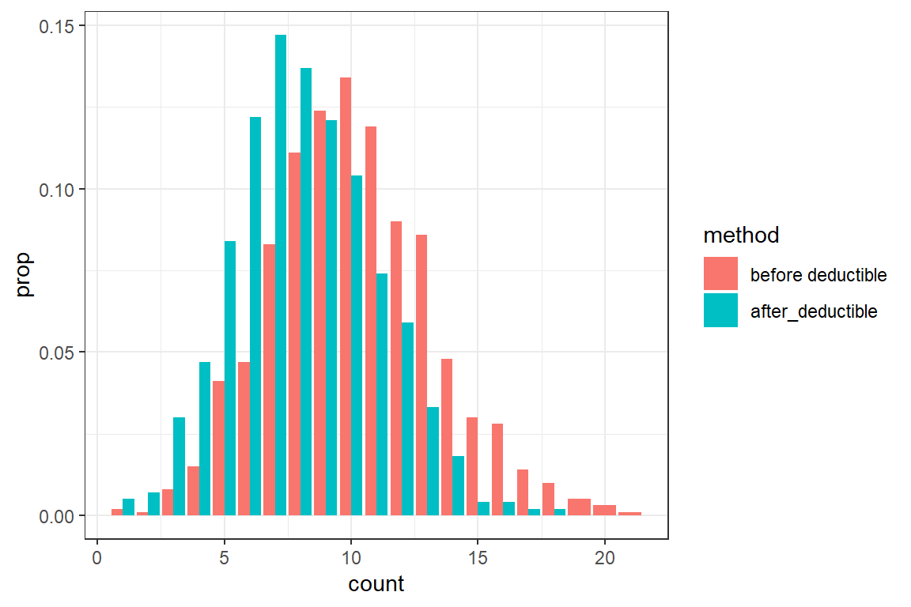
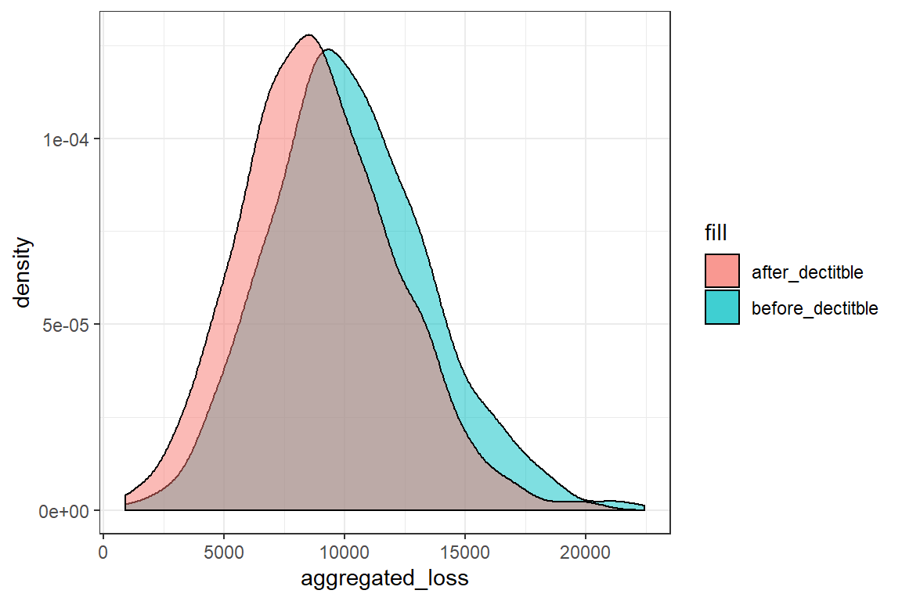

6 R implementation of the assignments 2019-2020
In this R tutorial you will implement the exercises from the assignment in R.
6.1 Assignment 1
The solution of the first assignment can be downloaded here.
6.1.1 Exercise 1
In the first exercise you computed a number of statistics for a distribution with cdf
\[ F_X(x) = \begin{cases} 0 & x < 0 \\ 1-0.5\cdot e^{-\beta\cdot x} & x \geq 0\end{cases}, \] for some \(\beta > 0\).
You can use the following function to simulate data from this distribution. Simulating from a given cdf will be covered in a later R tutorial.
simulate_assignment1 <- function(num_sim, beta) {
rexp(num_sim, rate = beta) * (runif(num_sim) > 0.5)
}
# this code simulates 10 observations from this distribution with beta = 0.5
simulate_assignment1(10, beta = 0.5) [1] 4.31338 2.72700 0.00000 0.00000 0.00000 4.74313 0.00000 0.09661 0.23204
[10] 0.00000Choose a value for \(\beta\) and simulate 10.000 observations from this distribution. Using this simulation:
- Plot the empirical cdf of your simulation;
- Compute \(P(X = 0)\);
- Compute \(E(X)\);
- Compute \(\sigma(X) = \sqrt{E((X - E(X))^2)}\).
Compare your answers with the solution of the assignment.
# set the seed for replicability when working with random numbers
set.seed(1)
n <- 10000
beta = 0.1
simul <- simulate_assignment1(n, beta)
# @1
ggplot() +
theme_bw() +
stat_ecdf(aes(simul))
# @2
sum(simul == 0) / n[1] 0.5018#@3
mean(simul)[1] 4.9220.5/beta[1] 5#@4
sd(simul)[1] 8.595sqrt(0.75)/beta[1] 8.66Next, we calculate \(E((X-30)_+)\). To calculate an expected value of the form \(E(g(X))\) from a simulation, we compute
\[ \widehat{E(g(X))} = \frac{1}{n}\sum_{i=1}^n g(x_i),\] where \(x_i\) are our simulated outcomes from the random variable \(X\).
In the case of the mean \(E(X)\), \(g(x) = x\), i.e. the identity function. We implement this function in R as
identity <- function(x) {
return(x)
}
mu = 1/n * sum(identity(simul))
print(mu)[1] 4.922You will now calculate the expected loss when there is a deductible of \(30\) using your simulated data.
Write a function
deductibletaking as inputx(a vector containing the loss amounts) andd(the deductible) and returning a vector \(y\) with \(y_i = (x_i-d)_+ = \max(x_i-d, 0)\);Test the function
deductiblethat you defined in the previous step. What is the output fordedutible(c(500, 200), 300). Is your function working as expected? A common mistake in implementing thedeductiblefunction is a misunderstanding of themaxfunction in R;
# returns the maximum of 1, 3 and 2
max(c(1, 3), 2)[1] 3 # returns a vector containing max(1, 2) and max(3, 2)
pmax(c(1, 3), 2)[1] 2 3- Calculate \(E(X-30)_+\) for your simulated vector.
deductible <- function(x, d)
{
return(pmax(x-d, 0))
}
1/n * sum(deductible(simul, 30))[1] 0.25190.5 * exp(-30*beta) / beta[1] 0.2489You will now calculate the remaining statistics from exercise 1.
- \(E(X \wedge 30)\)
- \(e_X(30)\)
- \(VaR_{0.95}(X)\)
# @1
limit <- function(x, limit) {
return(pmin(x, limit))
}
mean(limit(simul, 30))[1] 4.670.5/beta * (1-exp(-30*beta))[1] 4.751# @2
simul_excess_30 <- simul[simul > 30] - 30
mean(simul_excess_30)[1] 10.121/beta[1] 10# @3
quantile(simul, 0.95) 95%
22.91 -log(0.1)/beta[1] 23.036.2 Assignment 2
6.2.1 Exercise 2
You will solve a slightly adapted version of this exercise. Assume that the number of claims, \(N\), for an insurance portfolio follows a Poisson distribution with mean \(\lambda= 10\). The sizes of these claims are independent and follow a Gamma distribution with mean 1000 and variance 90000.
In this exercise you will compute various statistics related to the total loss.
- Create a single simulation for the aggregate loss \(S = X_1 + ... + X_N\).
set.seed(1)
lambda <- 10
mu <- 1000
sigmasq <- 90000;
# Simulate the number of claims from a Poisson distribution
N <- rpois(1, lambda)We have to simulate N losses from a gamma distribution with mean 1000 and variance 90000. When we check the documentation of rgamma we see that the distribution is parametrized by a shape and scale parameter.
In the details section of the documentation, you find: \[shape = a, scale = s, E(X) = a*s \text{ and } Var(X) = a*s^2.\] From this you can compute: \[scale = \frac{Var(X)}{E(X)} \text{ and } shape = \frac{E(X)}{scale}\]
scale = sigmasq / mu
shape = mu / scale
# Simulate N losses from a gamma distribution
X <- rgamma(N, shape = shape, scale = scale)
S = sum(X)You have now created a single simulation of \(S\). Using a for-loop, you can generate multiple simulations.
num_sim <- 1000
# create a vector for storing the result of the simulation
aggregated_loss <- rep(NA, num_sim)
for(i in 1:num_sim) {
# Add your code for a single simulation here
N <-
X <-
S <-
aggregated_loss[i] <- S
}You will now update the for-loop above to analyze the aggregated loss.
- Complete the for-loop and generate 1000 simulations of the aggregated loss;
- Use these simulations to compute the mean and standard deviation of the aggregated loss;
- Assume that the insurer imposes an ordinary deductible of 750. Add the variables
N_after_deductibleandaggregated_loss_deductiblein your simulation, which register the number of claims exceeding the deductible and the aggregate loss after imposing the deductible respectively; - Visualize the distribution of the number of claims before and after imposing the deductible;
- Compare the density of the aggregate loss before and after imposing the deductible.
# @1
num_sim <- 1000
# create a vector for storing the result of the simulation
aggregated_loss <- rep(NA, num_sim)
for(i in 1:num_sim) {
# Add your code for a single simulation here
N <- rpois(1, lambda)
X <- rgamma(N, shape = shape, scale = scale)
S <- sum(X)
aggregated_loss[i] <- S
}
# @2
mean(aggregated_loss)[1] 9999sd(aggregated_loss)[1] 3316# @3
num_sim <- 1000
# create a vector for storing the result of the simulation
deductible <- 750
aggregated_loss <- rep(NA, num_sim)
aggregated_loss_deductible <- rep(NA, num_sim)
N <- rep(NA, num_sim)
N_after_deductible <- rep(NA, num_sim)
for(i in 1:num_sim) {
# Add your code for a single simulation here
N[i] <- rpois(1, lambda)
X <- rgamma(N[i], shape = shape, scale = scale)
S <- sum(X)
aggregated_loss[i] <- S
N_after_deductible[i] <- sum(X > deductible)
aggregated_loss_deductible[i] <- sum(X[X > deductible])
}df <- rbind(data.frame(count = N, method = 'before deductible'),
data.frame(count = N_after_deductible, method = 'after_deductible'))
ggplot(df) +
theme_bw() +
geom_bar(aes(count, fill = method, y = ..prop.., group = method), position = position_dodge())
ggplot() +
theme_bw() +
geom_density(aes(aggregated_loss, fill = "before_dectitble"), alpha = .5) +
geom_density(aes(aggregated_loss_deductible, fill = "after_dectitble"), alpha = .5)